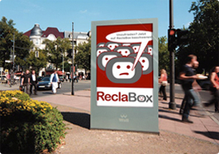

Was ist ReclaBox?

ReclaBox bietet seinen Nutzern eine interaktive Plattform für Beschwerden und Reklamationen. Unzufriedene Kunden und Bürger können ihren Unmut über Produkte und Dienstleistungen veröffentlichen.
Die Verantwortlichen in Firmen und Institutionen werden automatisch informiert und erhalten Gelegenheit, auf die Beschwerde zu antworten. Dabei wird der negativen Kundenäußerung die Sicht des betroffenen Unternehmens gegenübergestellt.
Nutzer können ihre Beschwerden kostenlos, anonym und ohne Anmeldung mit wenigen Mausklicks veröffentlichen. Die Veröffentlichung unterstützt die Bereitschaft der betroffenen Unternehmen, schnell und sachgerecht auf die Beschwerde zu reagieren.
Unternehmen können durch die Beschwerden Ihrer Kunden Verbesserungspotentiale an Produkten und Prozessen erkennen und nutzen. Die sachgerechte Reaktion ermöglicht die nachhaltige Stärkung bestehender Kundenbeziehungen, die Veröffentlichung bietet den Unternehmen zudem die Möglichkeit, sich von Wettbewerbern abzusetzen und neue Kunden zu gewinnen.